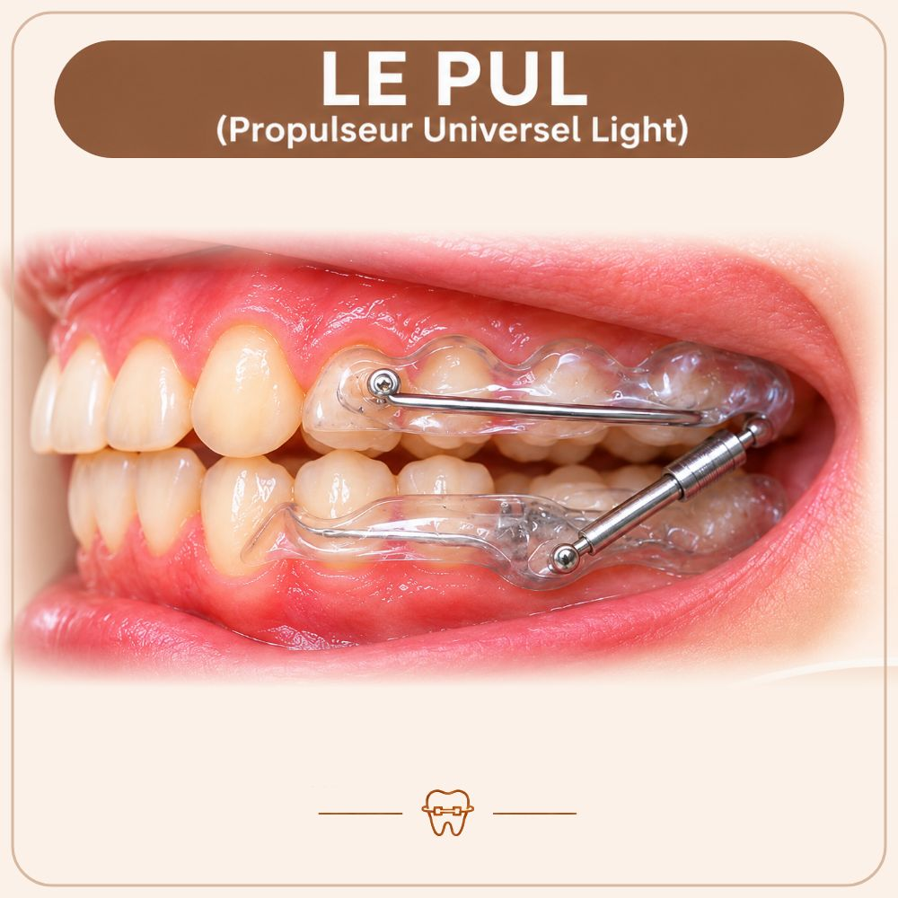

PUL
Appareil amovible

À quoi ça sert ?
Aider la mâchoire du bas à grandir.
Quand le porter ?
Jour et nuit.
À retenir
- Les 2 premiers jours : après l'école et la nuit. Ensuite, à l'école aussi.
- Enlevez-le pour manger et pour vous brosser les dents.
- Enlevez-le pour la flûte, la trompette, la natation, le judo ou le rugby.
- C'est normal qu'il bouge si vous ouvrez grand : la langue le tient au palais.
- S'il y a un élastique : changez-le 2 fois par semaine.
- S'il y a une vis : 1 tour par semaine, dans le sens de la flèche.
Entretien
Matin et soir : brosse à dents dédiée et eau tiède savonneuse, puis rincer. Bien le sécher avant de le ranger dans sa boîte.
La règle d'or
Dans la bouche ou dans la boîte, jamais dans un mouchoir.
Appareil perdu : 300 €